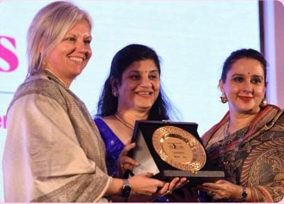
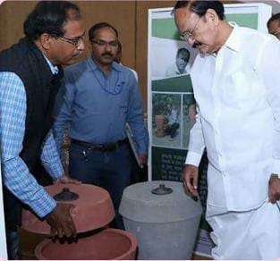
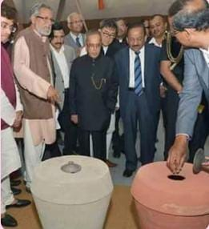
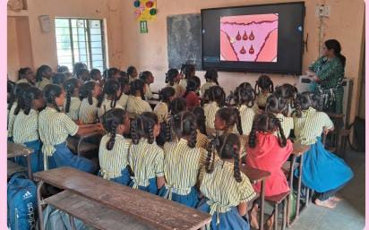
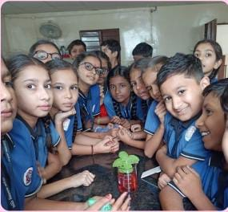
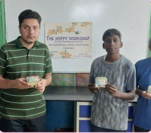
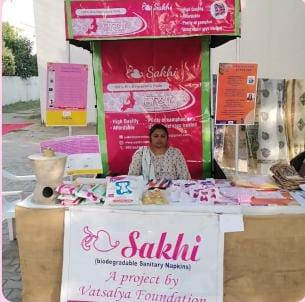
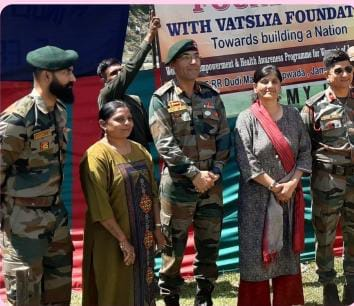
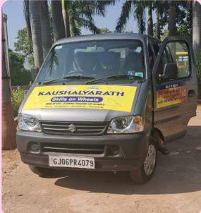

Ten years ago, we envisioned a future where women and adolescent girls could live free from the challenges associated with menstruation — such as poor health practices, lack of hygiene, and age-old taboos. We dreamed of an end-to-end solution for these issues — a total package for healthy and dignified living.
In a country where menstruation is still considered a taboo, surrounded by myths and misinformation, we designed scientific and community-based activities to educate and empower. By helping women understand their reproductive system and the process of motherhood, we’re working to normalize periods through games, songs, street plays, and honest conversations.
Importantly, we involve boys and men in our awareness campaigns to foster a gender-sensitive society — where periods are understood, accepted, and never a barrier to dreams.
Our mission continues through the Interactive Awareness Programs of Vatsalya Foundation.
A unique initiative that delivers education directly to students through a mobile van, bringing interactive math and science lessons to children in remote and underserved areas. This project nurtures curiosity, foundational skills, and a love for learning — helping bridge the educational gap.
The Happy Workshop empowers individuals with autism by helping them create handmade candles and soaps, enabling self-expression, skill development, and independence. Hosted at Sai Darshan School, the initiative also provides meals and accommodation, cultivating a supportive, inclusive environment.
Sakhi is a social enterprise addressing the lack of access to affordable and hygienic sanitary products in India. We create organic sanitary napkins and empower women to produce and distribute them. The initiative has reached over 5000 women and benefited 5+ lakh girls by:
We’ve developed a full ecosystem for safe menstrual management, including:
“We liberate women from the age-old shackles of unhealthy practices during menstruation. We help them live confidently and chase their dreams — every day of the month. Join us in celebrating healthy womanhood.”
Our innovative approach has earned recognition and rewards nationwide.
  We conduct educational workshops to spread menstrual hygiene awareness in schools, colleges, and rural areas.
  Our outreach programs have touched the lives of hundreds of women through counseling, awareness drives, and product distribution.
  